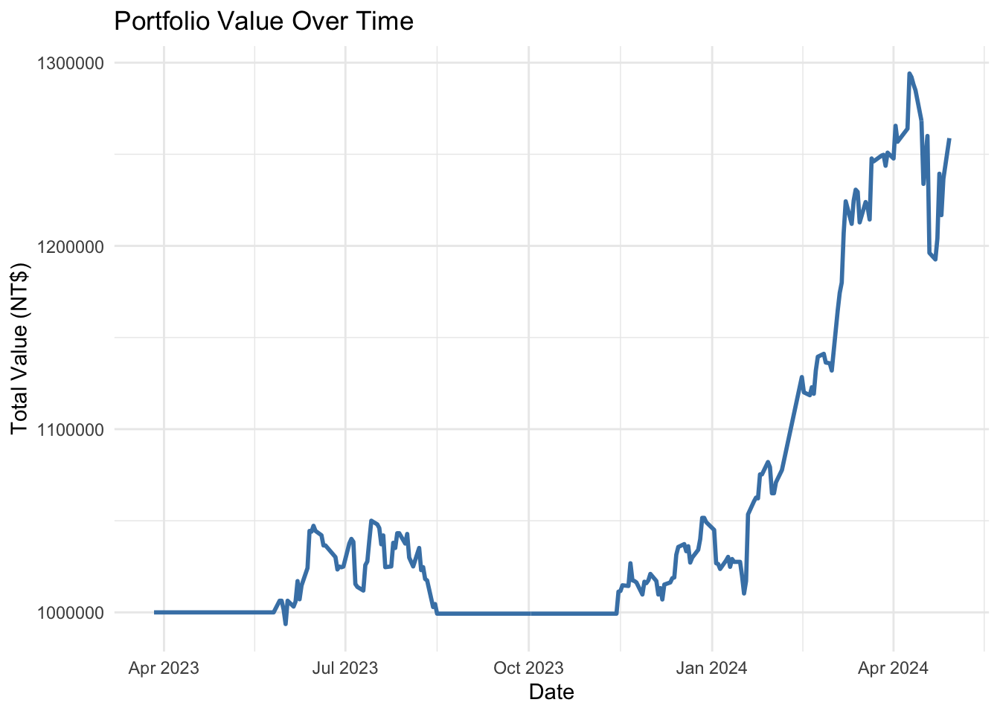
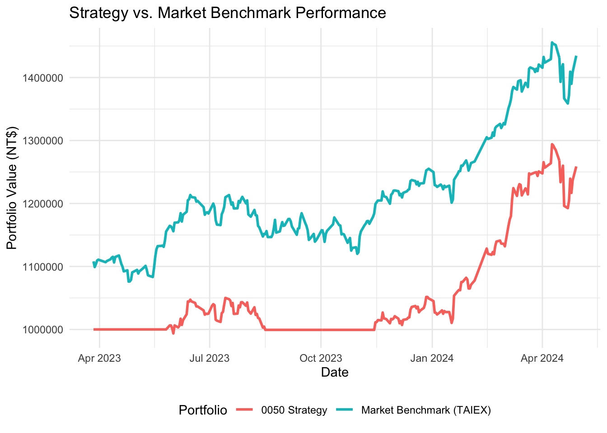
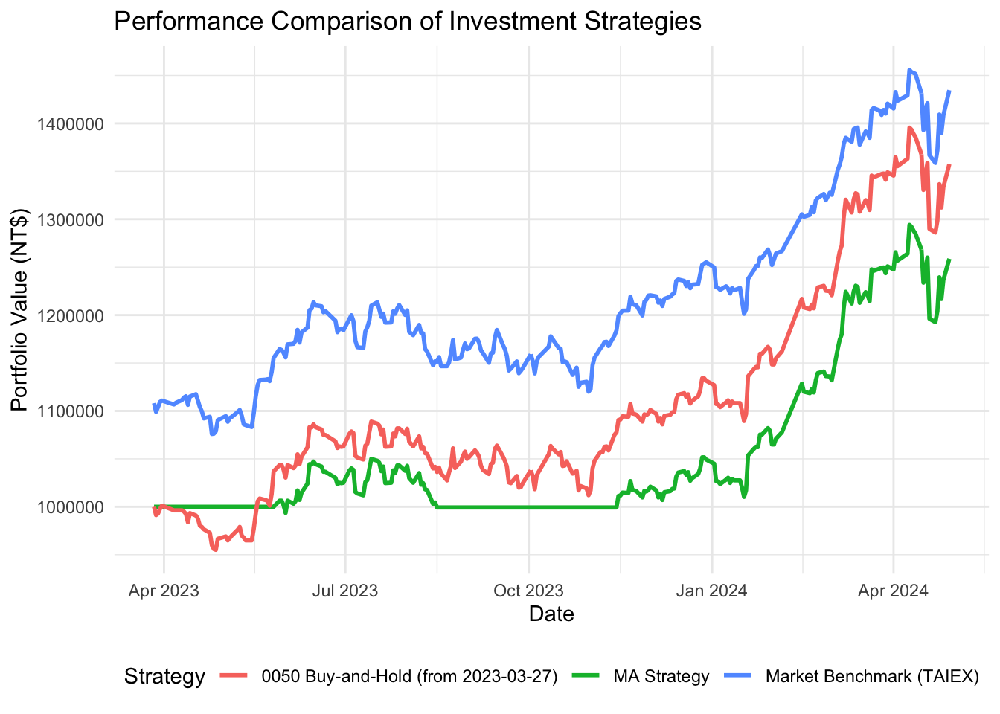

This document demonstrates a simple quantitative strategy applied to the Taiwan 50 ETF (0050.TW), one of the most actively traded ETFs representing large-cap stocks in Taiwan. The aim is twofold:
Strategy Simulation: To implement a basic moving average crossover strategy over the period from January 1, 2023 to April 30, 2024, simulating a full-investment trading strategy with daily price data.
Market Relationship Analysis: To examine the linear relationship between the returns of 0050.TW and the Taiwan market index (TAIEX, symbol: Y9999.TWO) by estimating a CAPM-style regression model.
Through this analysis, we seek to understand how systematic market movements explain the performance of 0050.TW and evaluate whether a naive technical strategy offers meaningful results in the context of Taiwan’s equity market.
1. Retrieve Historical Price Data
We begin by retrieving daily adjusted price data for the ETF 0050.TW. This serves as the basis for both the trading simulation and return calculations.
We simulate an all-in/all-out strategy using an initial capital of NT$1,000,000. The strategy takes full positions based on the generated signals and tracks the portfolio value over time.
capital <-1000000position <-0cash <- capitalportfolio <-data.frame()for (i in1:nrow(etf_signals)) { date_i <- etf_signals$date[i] price_i <- etf_signals$adjusted[i] signal <- etf_signals$signal[i]if (!is.na(signal)) {if (signal =="buy") { position <-floor(cash / price_i) cash <- cash - position * price_i } elseif (signal =="sell") { cash <- cash + position * price_i position <-0 } } total_value <- cash + position * price_i portfolio <-bind_rows(portfolio, data.frame(date = date_i, price = price_i, position, cash, total_value))}
5. Plot Portfolio Performance
We plot the evolution of total portfolio value to visualize how the trading strategy performed over time.
portfolio |>ggplot(aes(x = date, y = total_value)) +geom_line(color ="steelblue", linewidth =1) +labs(title ="Portfolio Value Over Time",y ="Total Value (NT$)",x ="Date") +theme_minimal()

6. Final Performance Summary
We summarize the total return of the strategy from start to end.
We plot both the strategy portfolio value and the benchmark value over time to visually compare performance.
ggplot(strategy_vs_benchmark, aes(x = date)) +geom_line(aes(y = strategy_value, color ="0050 Strategy"), size =1) +geom_line(aes(y = benchmark_value, color ="Market Benchmark (TAIEX)"), size =1) +labs(title ="Strategy vs. Market Benchmark Performance",x ="Date",y ="Portfolio Value (NT$)",color ="Portfolio") +theme_minimal() +theme(legend.position ="bottom")
Warning: Using `size` aesthetic for lines was deprecated in ggplot2 3.4.0.
ℹ Please use `linewidth` instead.

10. Buy-and-Hold Strategy
A buy-and-hold strategy is one of the most basic forms of passive investing. The investor purchases an asset and holds it over a specified period, regardless of market fluctuations, with the belief that long-term returns will outweigh short-term volatility.
In this section, we simulate a buy-and-hold approach for 0050.TW, starting from March 27, 2023. This date is chosen arbitrarily within our sample period, and we invest the full capital of NT$1,000,000 on that day. We then compare this strategy to:
The moving average crossover strategy
The market benchmark using the TAIEX index
# Filter data from 2023-03-27 onwardbh_etf_data <- etf_data |>filter(date >=as.Date("2023-03-27"))# Buy at the first available price on that dayinitial_bh_price <- bh_etf_data$adjusted[1]units_bh <-floor(1000000/ initial_bh_price)# Simulate holding till endbh_etf_hold <- bh_etf_data |>mutate(units = units_bh,bh_etf_value = units * adjusted ) |>select(date, bh_etf_value)# Merge with previous strategy and benchmarkstrategy_comparison <- strategy_vs_benchmark |>left_join(bh_etf_hold, by ="date")
We plot and compare all strategies (Including Buy-and-Hold 0050 from 2023-03-27).
ggplot(strategy_comparison, aes(x = date)) +geom_line(aes(y = strategy_value, color ="MA Strategy"), size =1) +geom_line(aes(y = benchmark_value, color ="Market Benchmark (TAIEX)"), size =1) +geom_line(aes(y = bh_etf_value, color ="0050 Buy-and-Hold (from 2023-03-27)"), size =1) +labs(title ="Performance Comparison of Investment Strategies",x ="Date",y ="Portfolio Value (NT$)",color ="Strategy") +theme_minimal() +theme(legend.position ="bottom")

Alternative Strategy Designs and Student Exercise
While the moving average crossover and buy-and-hold strategies are intuitive and widely used, they come with limitations. The crossover strategy may lag during fast trend reversals, and buy-and-hold ignores downside risk. Therefore, exploring alternative designs can improve robustness and risk-adjusted performance.
💡 Suggested Alternative Strategies
Dual Moving Average with Stop-Loss: Add a 10% stop-loss rule to the existing crossover logic to limit downside exposure.
Momentum-Based Allocation: Rebalance between 0050.TW and a risk-free proxy (e.g., Taiwan 10-year bond ETF) based on recent return momentum.
Volatility-Adjusted Strategy: Increase or decrease position sizes depending on realized volatility to manage risk exposure dynamically.
Mean Reversion Strategy: Use Bollinger Bands or RSI (Relative Strength Index) to capture short-term reversal patterns instead of trend following.
Calendar-Based Rotation: Invest only during historically strong months (e.g., November–April) and stay in cash otherwise (based on seasonality studies).
🧠 Student Exercise
Design your own simple trading strategy for 0050.TW using R. Your task:
Define a Trading Rule: Based on moving averages, technical indicators, or calendar effects.
Implement It: Modify the simulation logic provided above using tidyquant, TTR, or your own rules.
Benchmark It: Compare your strategy’s performance to the original moving average strategy and the buy-and-hold benchmarks.
Visualize and Interpret: Plot your strategy vs. the benchmark and explain why it performs better or worse.